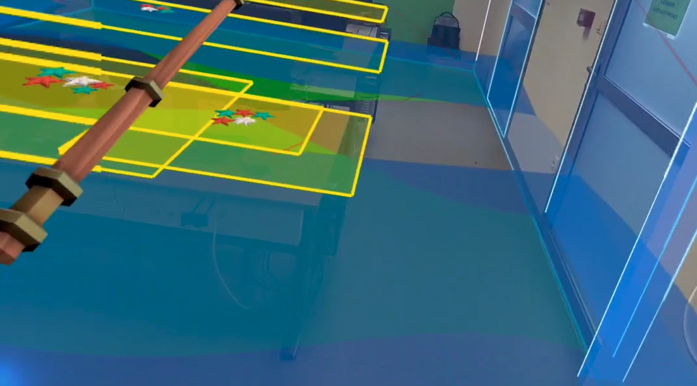
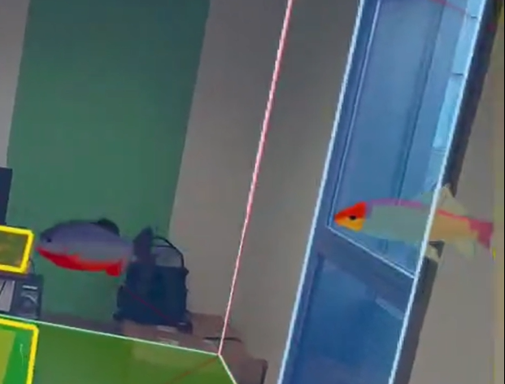
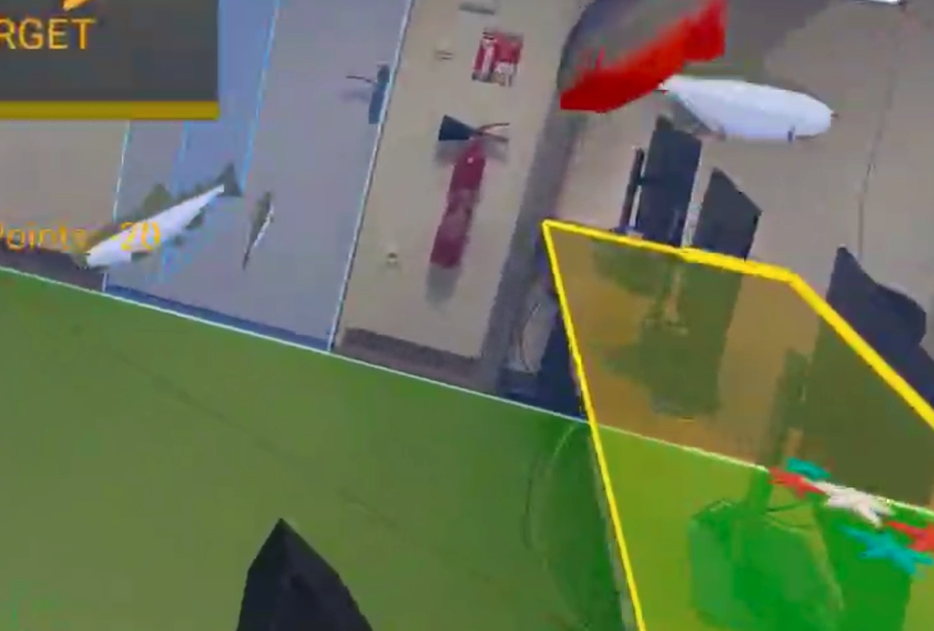
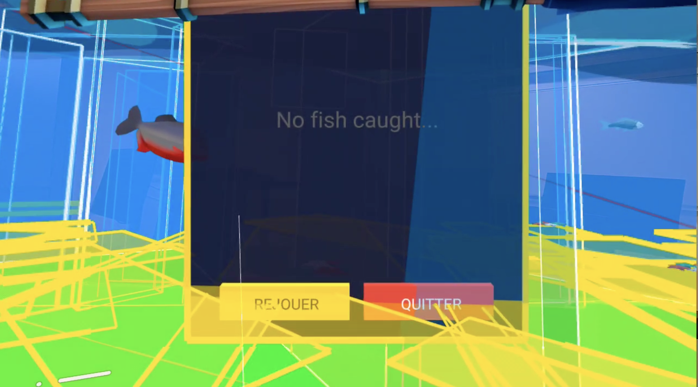

Water System • Fish Spawning • Collision System • XR Stability
During weeks 4 and 5, I focused on strengthening the XR dimension of the game to make the experience more immersive and reactive to the real environment. My goal was to push the environmental realism further by improving water behavior, fish spawning , spatial interaction, and XR system stability.
I worked mainly on environmental immersion: rising water simulation, dynamic fish entry from doors and windows, collision improvements, and XR event stability when removing and putting back the headset. My objective was to create a more believable underwater atmosphere inside the user's real room.
Animated water level that progressively floods the room with improved visual effects (waves, color variations).

Fish now spawn outside the room and enter through detected doors and windows for more realism.

Reduced "ping-pong" bouncing effect when fish collide with walls or objects. Movement is now smoother and more natural.

Fixed duplication issues when removing and wearing the headset again. Improved handling of XR pause/resume events.

<!-- HTML -->
<a-entity id="water-surface" position="0 0 -2" water-adapter>
<a-entity id="water-fluid" visible="false"
water-shader="color: #004b7f; opacity: 0.75; speed: 1.5; waveHeight: 0.08; waveFrequency: 1.5">
</a-entity>
<a-entity position="0 -0.05 0" visible="false"
water-shader="color: #006fb3; opacity: 0.35; speed: 0.8; waveHeight: 0.05; waveFrequency: 2.0">
</a-entity>
</a-entity>
<!-- JS -->
function animateWater(el, toStr, durationMs, onComplete) {
var t = toStr.split(' ').map(Number);
return gsap.to(el.object3D.position, {
x: t[0],
y: t[1],
z: t[2],
duration: durationMs / 1000,
ease: 'power2.inOut',
onComplete: function () {
try { el.emit('animationcomplete'); } catch (e) { /* ignore */ }
if (onComplete) onComplete();
}
});
}
function spawnFish(intervalMs = 2000) {
setInterval(() => {
const fish = document.createElement('a-entity');
fish.className = 'fish';
fish.setAttribute('gltf-model', '#goldfish');
fish.setAttribute('position', '0 1 -2');
document.querySelector('#world-anchor')?.appendChild(fish);
}, intervalMs);
}